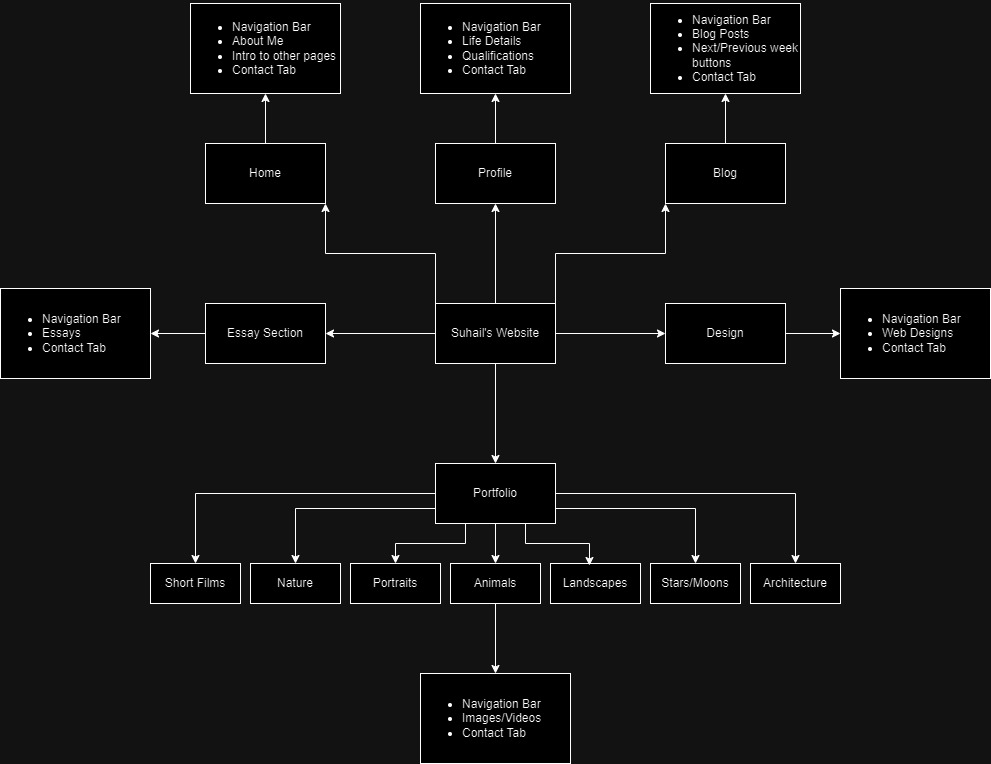
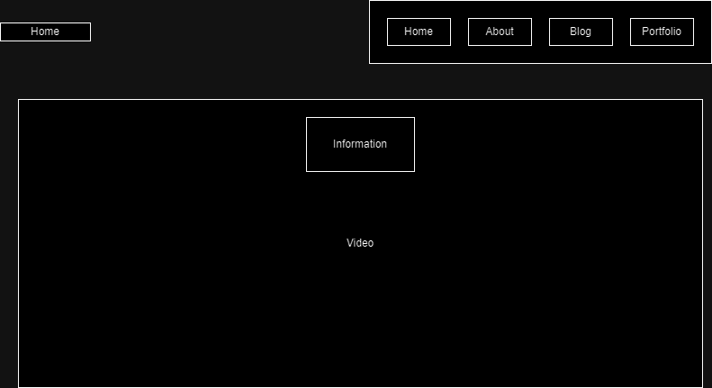

Sail's Ship
Designs
Goal Allignment:
I want a website capable of showing off my different skills, from programming to photography. I want this to be done through interative and intuitive design of a webpage, as well as having my works on my portfolio page. This website will be something I can show to possible employers for any field that I would apply to.
Information Structure
First Wireframe Designs
 |
The navigation bar that will be on each page. It will stay with the page as it moves, at the top of the screen, for ease of access to the other pages. |
| The home screen will feature a cut together preview of some scenes from my short films, for an immediate intro to my content. The page will be minimlistic in its design otherwise |  |
 |
My portfolio page will feature different albums of picture centered around different topics, such as portraits, nature and animals. Each album will be represented by thumbnails of a relevant topic. When hovering over the image it will present the title of the album to the user. |
For my short film portfolio page, I want to have each film with a description next to it.  |
Style Guide
Font and Font Colour
In terms of fonts, I have two in mind. For page headings, I want to use Silent Lips, its a very stylized font that is unique but readable for short texts and for the rest of my text I want to use Krylon, I think it blends minimilism with the style of Times New Roman. I will utilise white for my text, as it is readable against the black background. If the white contrasts too much, I might settle for an off-white grey. For my hyperlinks I am going to use gold, specifically #b8860b, as it works well on the black background, due to not being hard to read but also striking enough to catch the eye.
Colour Scheme
The main colour scheme of my website is going to be black and white. I want the websites overall design to be minimalistic and very contrasted. The idea is to use this to point towards different parts of the page, especially things like my games, videos and pictures. The vibrant colours will contrast greatly against the background.
Alignment and Composition
The whole website will be centered, with a focus on symmetrical balance. Most pages will be split straight down the center to achieve this, but some aspects will have symmetry across the diagonals, while still centered. The idea behind this is to complement the photos and short films. Blocks of either two or four pictures will be in the portfolio, the pictures will also be placed such that they will balance out the symmetry.